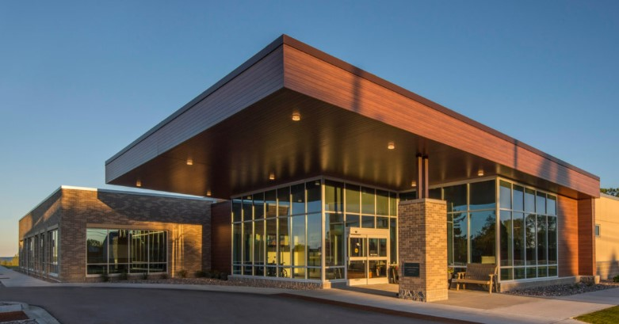

Purpose
3r see that rural patients dont have enough medical opportunity, like facilities, professions,medical finance to be able to treat such medical diagnosis that are so important in there life. 3r can be able to
meet those needs with such process, and new medical advance practice that patient can worry less.
About
In most cases patients that are so in need have to travel to city area, or most populated area to recieve treatment.Fortunately 3r are able to not only bring medical service to petients in the rural area,
but they are able to exhaust patients idea of traveling from city to rural. 3r communicate with medical professions
in rural area that are unreachable by patients. And next are able to group those medical profession and start treating patients.

Current
3R was established in 2017 with a drive of good intention. 3R has over 60 years of clinical research experience of bringing service in rural communities with clear path.Partnership
3r has partnered with professions and facilities in the medical fields like Certified medical oncologists,Pharmacists,
Oncology nursing staff,
Pathologists,
Surgeons,
Radiology departments (which include a PET Scan),
CLIA certified labs, to work together to bring the best for patients.